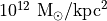
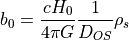
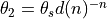
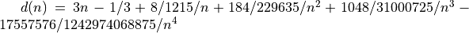
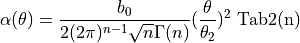

Einasto potential (Work-in-progress)
Set the potential profile to the Einasto potential
In the parameter file, rhos is assumed in .
In set_lens.c:set_dynamics(), the impact parameter is computed as such:

The deflection angle is given by
, with 

This potential is tabulated with files mat_2nplus1.txt, mat_2n.txt, mat_2nplus2.txt. The code to build these tables is TBD